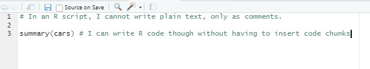
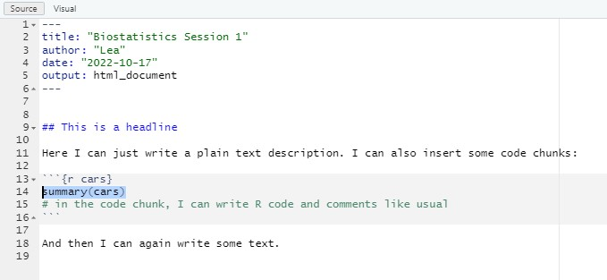
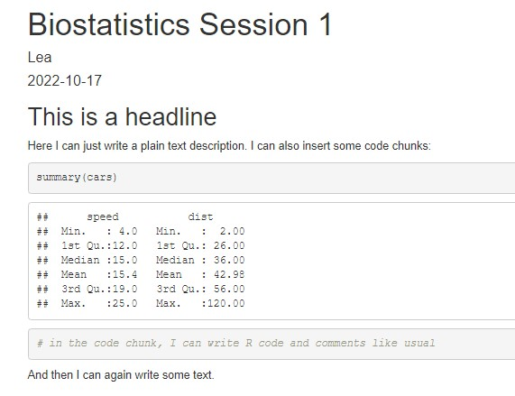

13 R Markdown
Course: “Biostatistics”
Translational Neuroscience
R Markdown
R scripts (.R) are a good way to save your code. However, you’d better heavily comment in your scripts, so that future you (and potentially collaborators) know what happens where in your script.
An extension is an R Markdown file (.Rmd). This is also a sort of script, but the main focus is on writing text (like in a word processor) and mix it with code chunks, in which you can write your R code. R Markdown is the “language” you use to write in these files, which is a variety of the Markdown language.
The advantage of R Markdown files, in comparison to Word or LaTeX files, is that they increase reproducibility of your statistical results. For example, you can (and will) write whole reports in R Markdown.
A newer variant is called quarto, which works very similar to R Markdown (but is more flexible). These slides are written with it.
Comparison: R vs. R Markdown 1


Comparison: R vs. R Markdown 2

Your First R Markdown Script
Create a new
.Rmdfile, change/insert the title and author.Check out the content of it. What different parts do you see?
- Switch between “Source” and “Visual” in the top left. What changes? What is “Visual”?
Delete and add some of the text on the white background. Change the Header (indicated by
##) to “About me” and write something about yourself underneath.In the grey boxes (“code chunks”), add some code. Try to find out how you can add a new code chunk.
Save the file with a sensible name.
What happens when you click on “Knit” (top of Script pane)?
R Markdown Advantages
There are many useful things you can do with R Markdown (adding different headers, adding inline code, knitting as a PDF, adding pictures or tables…). You can also decide whether each code chunk should be visible in the output, etc.
Example:
For further information, check out the R Markdown cheatsheet: https://rmarkdown.rstudio.com/lesson-15.HTML
Code Chunk Options

You can change these default values for code chunks for the rest of your document:
```{r, include=FALSE}
knitr::opts_chunk$set(
echo = FALSE, #this is a good default for your report
fig.width = 6, fig.height = 6
)
```Fore more information, see https://yihui.org/knitr/options/
From an R script to R Markdown
Previously, we have just worked with .R scripts. If you have a full R script with your entire analysis (or even several scripts), how do you include them in an R Markdown file?
From an R script to R Markdown 2
Option 2: “Import” the R script and run it with the source function:
```{r message=FALSE, warning=FALSE}
source("analysis.R", #your R script here (same folder as your project)
local = knitr::knit_global())
```You can now use all variables that you have created in your R script. But you cannot show individual code chunks (echo = TRUE).
Your Second R Markdown Script
- Use one of the two methods described before to include the R analysis for your report into an R Markdown document.
- Output the content of any variable of your R script and include it as inline code in some text (Cheat Sheet).
Examples for your report
Now you know everything you need to know for your RMarkdown report!
Since writing reports with inline code can be tricky sometimes, here are some examples for the most common statistical tests.
Examples for your report: t-test
```{r}
data = tibble(a = rnorm(n=100, mean=.5, sd=.2)) %>% mutate(b = a - rnorm(n=100, mean=.1, sd=.2))
mytest = with(data, t.test(a, b, paired=TRUE))
#mytest %>% apa::t_apa(es_ci=TRUE) #we don't want to print output to the console anymore
```
We performed a paired *t*-test and found a significant difference between both conditions
(`r mytest %>% apa::t_apa(es_ci=TRUE, print=FALSE, format="rmarkdown")`). In condition A, reaction times were higher
(*M* = `r data %>% pull(a) %>% mean() %>% signif(3)` s, *SD* = `r data %>% pull(a) %>% sd() %>% signif(3)` s)
compared to condition B (*M* = `r data %>% pull(b) %>% mean() %>% signif(3)` s, *SD* = `r data %>% pull(b) %>% sd() %>% signif(3)` s).We performed a paired t-test and found a significant difference between both conditions (t(99) = 5.38, p < .001, d = 0.54 [0.33; 0.75]). In condition A, reaction times were higher (M = 0.547 s, SD = 0.213 s) compared to condition B (M = 0.439 s, SD = 0.309 s).
Examples for your report: Correlation
```{r}
myCor = with(data, cor.test(a, b))
#myCor %>% apa::cor_apa(r_ci=TRUE) #we don't want to print output to the console anymore
```
We found a significant Pearson correlation between both conditions
(`r myCor %>% apa::cor_apa(r_ci=TRUE, print=FALSE, format="rmarkdown")`).
Those individuals with higher reaction times in condition A
(*M* = `r data %>% pull(a) %>% mean() %>% signif(3)` s, *SD* = `r data %>% pull(a) %>% sd() %>% signif(3)` s)
also performed more slowly in condition B
(*M* = `r data %>% pull(b) %>% mean() %>% signif(3)` s, *SD* = `r data %>% pull(b) %>% sd() %>% signif(3)` s).We found a significant Pearson correlation between both conditions (r(98) = .76 [.66; .83], p < .001). Those individuals with higher reaction times in condition A (M = 0.547 s, SD = 0.213 s) also performed more slowly in condition B (M = 0.439 s, SD = 0.309 s).
Examples for your report: ANOVA
library(afex)
model <- aov_ez(data = data,
id = "subject",
dv = "performance",
between = "condition",
within = "time",
es = "pes", type = 3, include_aov = TRUE)
#apa::anova_apa(model) #we don't want to print output to the console anymore
anovaTable <- apa::anova_apa(model, print = F, format = "rmarkdown") %>% bind_rows()# A tibble: 4 × 2
effect text
<chr> <chr>
1 (Intercept) "*F*(1, 98) = 661.36, *p* < .001, $\\eta^2_p$ = .87"
2 condition "*F*(1, 98) = 7.65, *p* = .007, $\\eta^2_p$ = .07"
3 time "*F*(1, 98) = 6.40, *p* = .013, $\\eta^2_p$ = .06"
4 condition:time "*F*(1, 98) = 0.81, *p* = .370, $\\eta^2_p$ < .01" Examples for your report: ANOVA 2
```{r}
anovaTable <- apa::anova_apa(model, print = F, format = "rmarkdown") %>% bind_rows()
```
We conducted a $2 \times 2$ ANOVA with *performance* as dependent variable, the within-subjects factor *time* (Baseline vs. Post), and the between-subjects factor *condition* (Treatment vs. Placebo).
Results indicated a main effect of *condition*
`r anovaTable %>% filter(effect=="condition") %>% pull(text)` with the treatment group
(*M* = `r data %>% filter(condition=="treatment") %>% summarize(.by = subject, performance = mean(performance)) %>% pull(performance) %>% mean() %>% signif(3)`, *SD* = `r data %>% filter(condition=="treatment") %>% summarize(.by = subject, performance = mean(performance)) %>% pull(performance) %>% sd() %>% signif(3)`)
exhibiting higher performance than the placebo group (*M* = `r data %>% filter(condition=="placebo") %>% summarize(.by = subject, performance = mean(performance)) %>% pull(performance) %>% mean() %>% signif(3)`, *SD* = `r data %>% filter(condition=="placebo") %>% summarize(.by = subject, performance = mean(performance)) %>% pull(performance) %>% sd() %>% signif(3)`).
We also observed a main effect of *time* `r anovaTable %>% filter(effect=="time") %>% pull(text)` with performance **decreasing** from baseline (*M* = `r data %>% filter(time==1) %>% pull(performance) %>% mean() %>% signif(3)`, *SD* = `r data %>% filter(time==1) %>% pull(performance) %>% sd() %>% signif(3)`) to post treatment (*M* = `r data %>% filter(time==2) %>% pull(performance) %>% mean() %>% signif(3)`, *SD* = `r data %>% filter(time==2) %>% pull(performance) %>% sd() %>% signif(3)`).
The interaction did not reach significance `r anovaTable %>% filter(effect=="condition:time") %>% pull(text)`.
The effects are depicted in Figure 1.We conducted a \(2 \times 2\) ANOVA with performance as dependent variable, the within-subjects factor time (Baseline vs. Post), and the between-subjects factor condition (Treatment vs. Placebo). Results indicated a main effect of condition F(1, 98) = 7.65, p = .007, \(\eta^2_p\) = .07 with the treatment group (M = 0.433, SD = 0.17) exhibiting higher performance than the placebo group (M = 0.349, SD = 0.131). We also observed a main effect of time F(1, 98) = 6.40, p = .013, \(\eta^2_p\) = .06 with performance decreasing from baseline (M = 0.429, SD = 0.217) to post treatment (M = 0.352, SD = 0.219). The interaction did not reach significance F(1, 98) = 0.81, p = .370, \(\eta^2_p\) < .01. The effects are depicted in Figure 1.
Thanks
Learning objectives:
- Know how you can create an R Markdown report from your R script(s)
Next session:
Troubleshooting your report